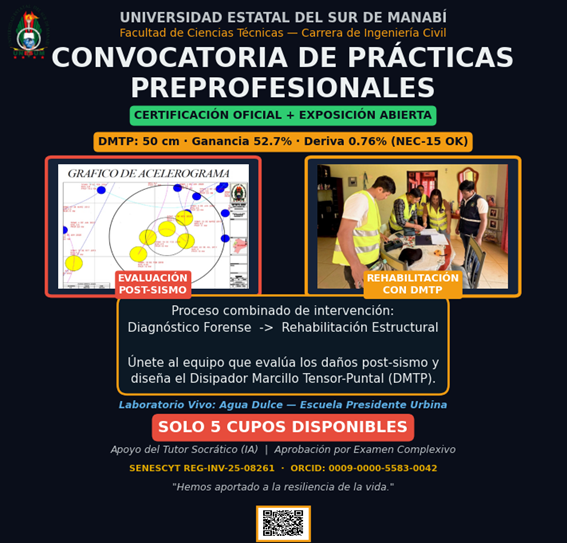

🌎 RED DE INNOVACIÓN INTERUNIVERSITARIA
Conectando el conocimiento de Manabí con el territorio
El Ecosistema ECT-UNESUM no es una isla
Nuestro Laboratorio Vivo (Bloque 001 en Jipijapa) está abierto para que estudiantes y docentes de otras universidades de la provincia y del país realicen sus Prácticas Preprofesionales (PPP), tesis o proyectos integradores.
UNESUM
Universidad Estatal del Sur de Manabí
NODO CENTRALUTM
Universidad Técnica de Manabí
NODO ALIADO (En espera)ULEAM
Universidad Laica Eloy Alfaro
NODO ALIADO (En espera)ESPAM MFL
Escuela Superior Politécnica
NODO ALIADO (En espera)⚖️ MARCO LEGAL Y ACADÉMICO DEL INTERCAMBIO
El Ecosistema ECT-UNESUM se articula con la normativa vigente del Sistema de Educación Superior del Ecuador, permitiendo que estudiantes de otras Instituciones de Educación Superior (IES) realicen sus Prácticas Preprofesionales (PPP), Proyectos de Vinculación o Intercambio Académico en nuestro Laboratorio Vivo, cumpliendo con los siguientes lineamientos:
- 🔹 Prácticas Preprofesionales (PPP): Conforme al Reglamento de Régimen Académico, las PPP son obligatorias para la titulación y deben ser planificadas, monitoreadas y evaluadas por un tutor académico y uno de la entidad receptora. Nuestra plataforma actúa como el eje de trazabilidad de esas horas, vinculando al estudiante de tu universidad con el Bloque 001.
- 🔹 Proyectos de Vinculación con la Sociedad: La LOES exige que al menos una parte de las prácticas se oriente al servicio comunitario. El Bloque 001 (Agua Dulce) es el escenario perfecto para que tus estudiantes cumplan este requisito mientras aplican sus conocimientos de ingeniería.
- 🔹 Intercambio Académico: La UNESUM, en su Estatuto, promueve la articulación con otras IES para el desarrollo regional. Los estudiantes de la UTM, ULEAM o ESPAM pueden cursar módulos de nuestro programa (M01-M08) como parte de su formación complementaria, convalidable según el convenio específico que se firme.
Paso 1: Solicitud
La universidad interesada completa el formulario.
Paso 2: Convenio
Se firma el convenio interinstitucional y se activa el Nodo.
Paso 3: Prácticas
Los estudiantes se registran en la plataforma y acceden al Bloque 001.
📢 CONVOCATORIA ABIERTA: PRÁCTICAS PREPROFESIONALES
¿Eres estudiante de la UNESUM, UTM, ULEAM o ESPAM? Únete al equipo que evalúa los daños post-sismo y diseña el Disipador Marcillo Tensor-Puntal (DMTP) en el Laboratorio Vivo de Agua Dulce.

* Haz clic en la imagen para ver el flyer en tamaño completo.
🤝 Solicitar Convenio de Colaboración Interinstitucional
Si representas a una universidad y deseas que tus estudiantes se sumen al Bloque 001, completa este formulario.